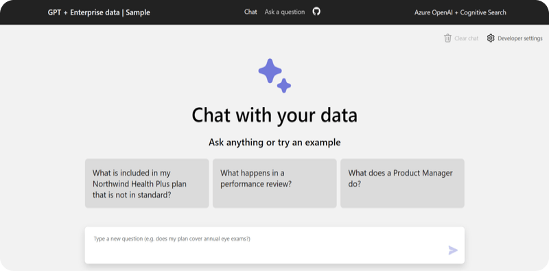
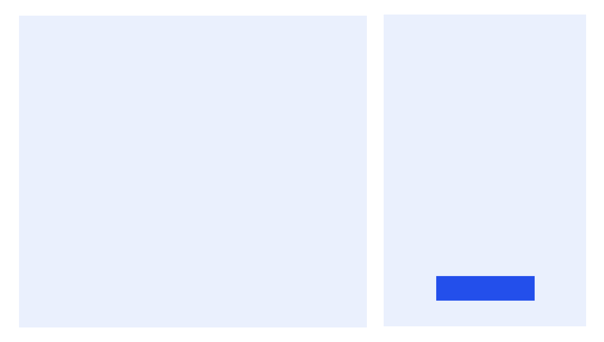
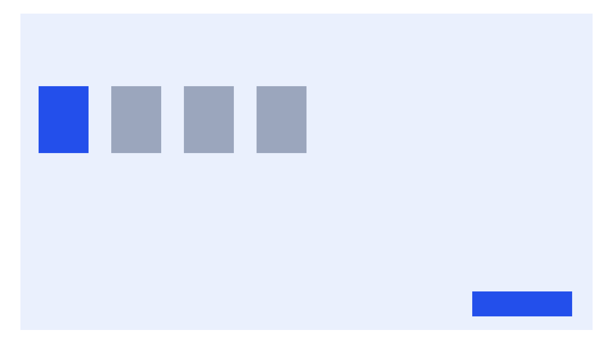
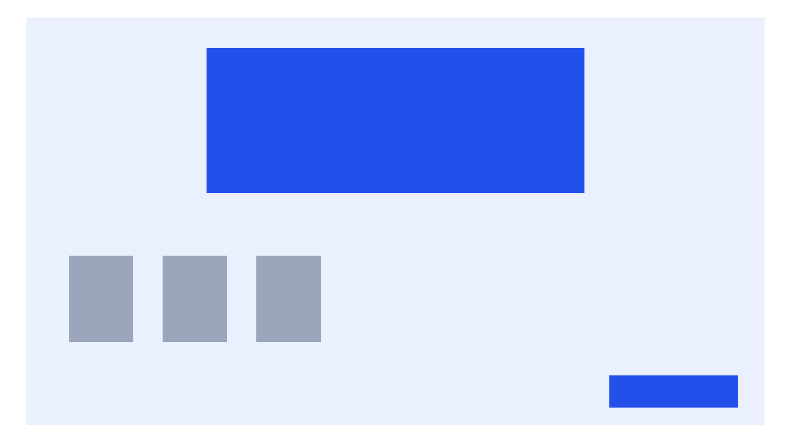
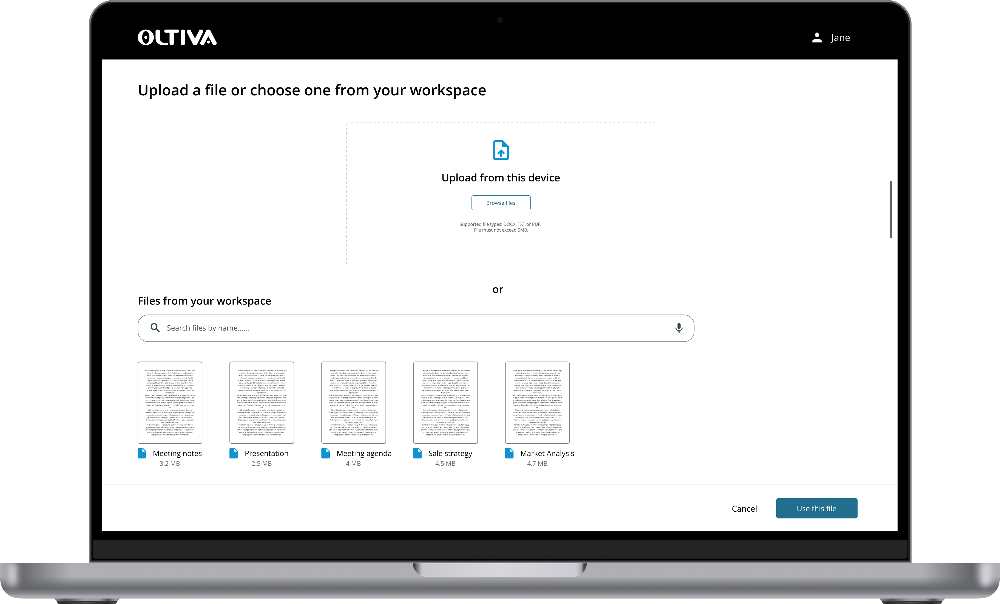

From confusion to confidence.
Oltiva AI helps Avanade's global sales team extract insights from complex documents—proposals, SOWs, RFPs, and contracts.
The initial MVP looked like AI, but didn't solve the underlying workflow problems. Users couldn't figure out where to start, and task completion languished at 70%. I led the redesign to transform a confusing demo into a guided, predictable experience that aligns with how sales reps actually work.
Design Principles
- Predictable – Users should never wonder "what's next?" The path should be obvious.
- Guided – Lead users through the workflow, don't abandon them on a blank canvas.
- Searchable – Everything should be findable later. Nothing disappears.
- Sales-oriented – Speak the user's language, solve their actual problems, not technical possibilities.
An MVP That Looked Like AI, But Didn't Work Like One
Avanade's sales team relies on dense, complex documents to close deals. Oltiva AI was built to help them surface insights instantly—but the initial demo created more confusion than clarity.
When I tested the original demo with 5 sales reps, four critical issues emerged:

- ⚠️ No clear next step – Users landed on the screen and didn't know where to click first
- ⚠️ Guiding questions didn't match reality – The AI's prompts reflected how developers thought, not how sales reps work
- ⚠️ Accessibility issues – Low contrast and small targets made the demo difficult for some users
- ⚠️ No way to use real files – Users couldn't upload their own documents, so they couldn't validate if the tool actually helped
"I don't know where to start."
The surface problem was confusion. The root problem was deeper: the flow didn't match the user's mental model.
Understanding How Sales Reps Actually Work
Before touching any designs, I needed to understand the context. I conducted 5 moderated usability tests with sales reps, observing how they approached documents and what they expected from an AI tool.
For Avanade sales reps, every task begins with a concrete artifact—a proposal, SOW, or contract they need to
understand. Their primary intent in Oltiva is not "explore the tool," but "get insights from this specific
document."
This meant: uploading a file isn't one option among many—it's the core entry point of the entire
flow. Everything else is supporting material.
Design Iterations: From Confusion to Clarity
Iteration 1 — The "Everything on One Screen" Approach
Hypothesis: Fewer clicks = faster process. Putting all actions on one screen would simplify the
experience.
Reality: Only 70% task completion. Users repeatedly said: "I don't know where to start."
The screen was visually simple, but cognitively overwhelming. Without hierarchy, users couldn't distinguish
primary from secondary actions.

Iteration 2 — Adding Structure
What changed: Grouped related actions, introduced icon + color differentiation, reduced copy.
Result: Task completion improved to 75%. Users finally had a sense of where to look—but still hesitated
on the first click. Every option still looked equally important.

Iteration 3 — Making Upload the Hero
What changed: Made "Select or upload a file" visually dominant (primary button), pushed secondary
actions to supporting areas.
Result: Task completion jumped to 95%. Users no longer hesitated—they knew exactly where to begin.

The Learning: The breakthrough wasn't visual—it was conceptual. Once I understood that uploading is the entry point, not an option, the hierarchy became obvious.
Final Design: A Guided AI Experience
The final design feels less like "using a tool" and more like working with a knowledgeable assistant. Every decision ties back to the four issues uncovered in testing.

Feature 1 — One-Click File Access
Solving: "No upload option meant users couldn't try it with real files"
Users can upload from desktop or choose from the enterprise document hub—no digging required. The entry point
is immediate and obvious.
Feature 2 — Smart AI Suggestions
Solving: "Guiding questions didn't reflect how sales reps actually work"
The AI pulls out what matters to sales reps: timelines, budgets, dependencies, and decision-critical details.
It also suggests relevant follow-up questions.
Feature 3 — Organized for Reuse
Solving: "Users had no clear next step in the flow"
Every file and conversation is automatically stored in a searchable history. Deals become easier to retrace
later—and users always know what to do next because the path is preserved.
From Confusion to Confidence
The redesign transformed both user behavior and stakeholder confidence.
Business Impact
- The redesigned concept secured unanimous approval from sales leadership (the "Clinicians" review board)
- Project received greenlight to advance to the next phase
- Foundation established for rollout to 2,600+ sales representatives
"Finally—I know exactly what to do."
What I learned.
If I were to do this again:
- I would test even earlier—before any visual design—by walking reps through paper prototypes
- I would track time-on-task alongside completion rates to measure efficiency gains
- I would involve developers sooner in discussing how the "smart suggestions" could surface more dynamically